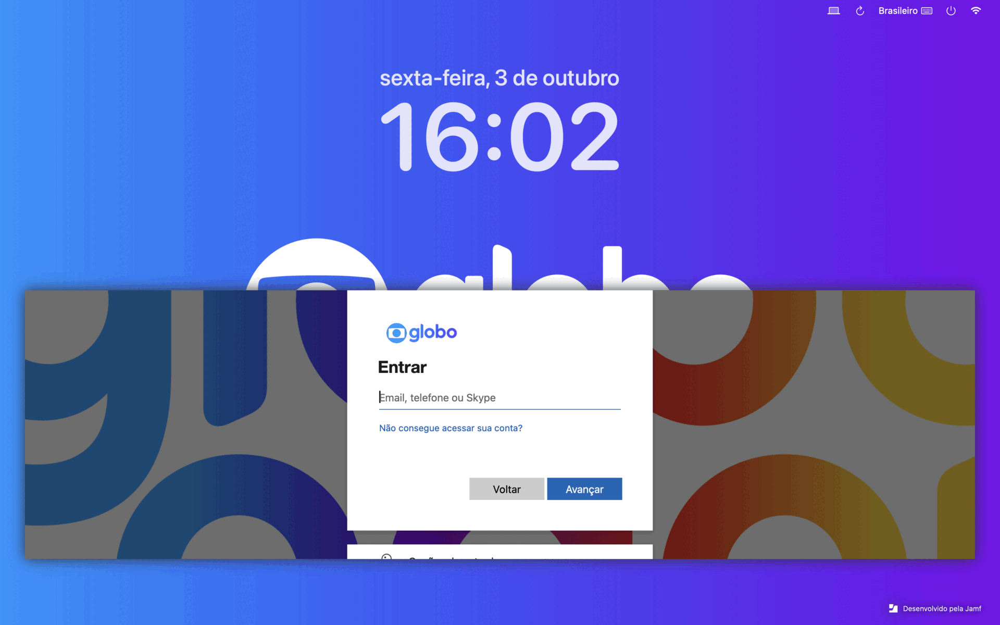
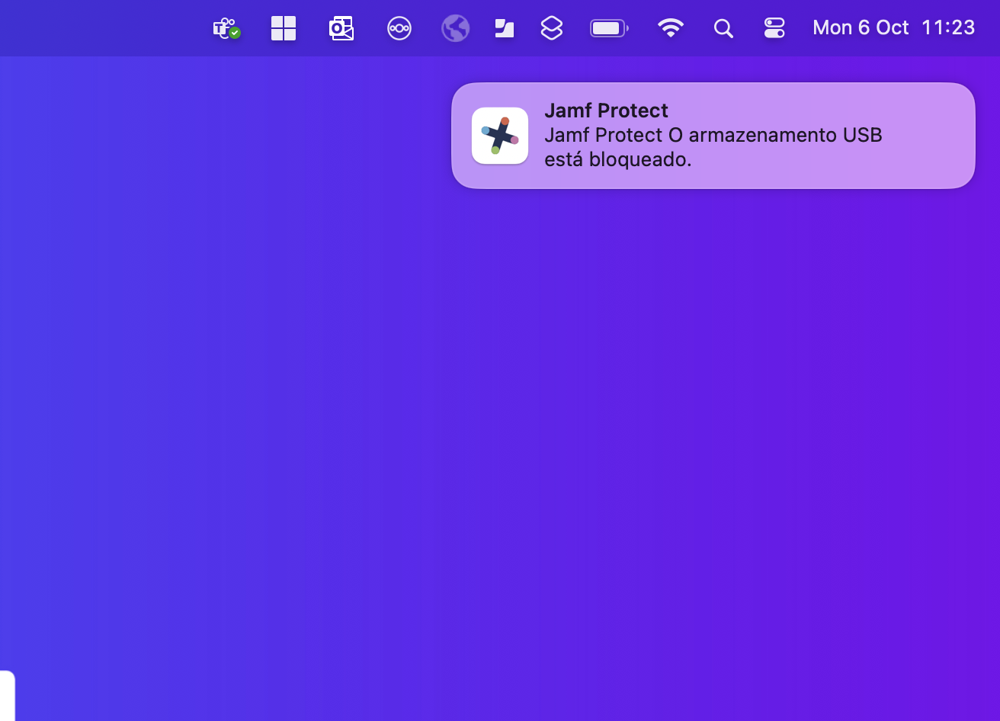

Atenção à senha utilizada nos serviços Microsoft:
Durante o processo de migração, sua senha dos serviços Microsoft será sincronizada com a senha local do Mac.
Se sua senha contiver os caracteres especiais: ~ ` ' " ^ é recomendada a troca antes do próximo login.
Senhas com estes caracteres podem causar incompatibilidade durante a sincronização.
Obs.: Senhas muito extensas também podem causar transtornos no processo de login.
Faça a alteração pelo portal Microsoft, escolhendo uma senha forte e de tamanho moderado.
No próximo login, sua senha será sincronizada automaticamente com a senha Microsoft! Em caso de dúvidas, consulte o suporte.
O que vai mudar para você
Aqui você encontra orientações ilustradas e exemplos das principais mudanças após a migração. Use os prints e vídeos para tirar dúvidas rapidamente!

Novo login com Jamf Connect
Após a migração, seu próximo login será usando o Jamf Connect, integrando seu acesso corporativo com mais segurança. Basta inserir suas credenciais Globo, e caso necessário escolha a conta para sincronizar e clique em conectar, conforme a nova tela ilustrada.
Antes de reiniciar a máquina, caso sua senha tenha os caracteres ~ ` ' " ^ você de realziar a troca
Como solicitar acesso de admin temporário
No menu do Jamf Connect (topo da tela), clique em Request Admin Privileges.
Informe o motivo e aguarde alguns instantes.
Seu acesso será de admin por 5 minutos, apenas para aquela necessidade.
Veja como é simples solicitar elevação, deixando seu Mac seguro para todos.

USB bloqueado
Se tentar conectar um dispositivo USB não autorizado, será exibido um alerta e o acesso será negado automaticamente.
Essa medida protege seus dados e o ambiente corporativo.
Novo papel de parede Globo
Após a migração, seu Mac exibirá automaticamente o papel de parede institucional da Globo, proporcionando mais identidade visual e integração ao time.
O layout pode variar conforme campanhas da empresa.